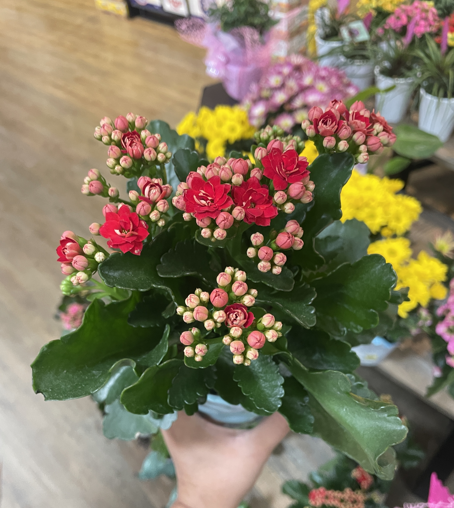
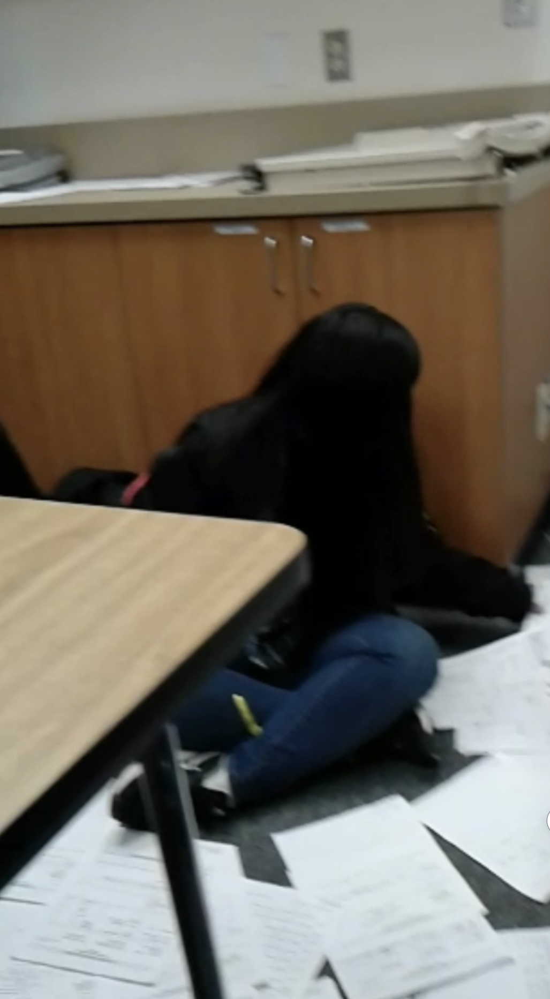
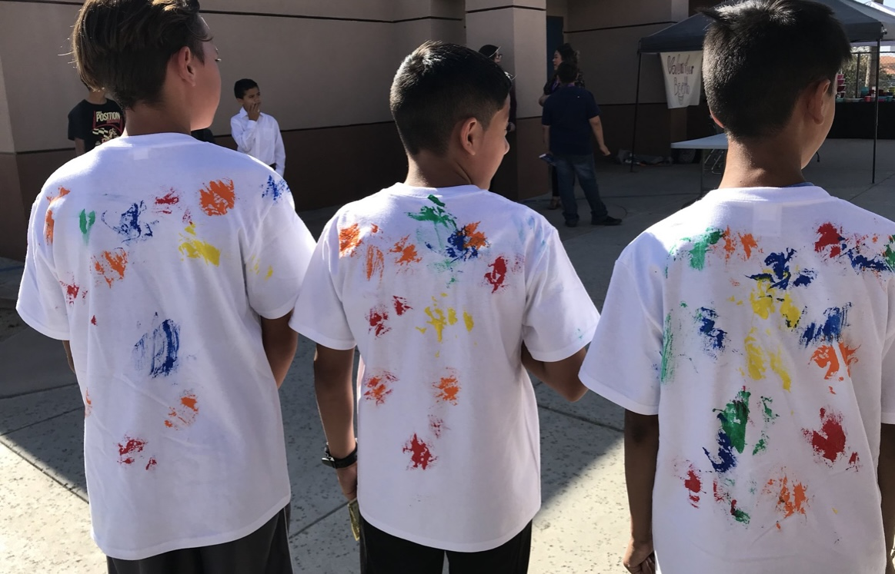
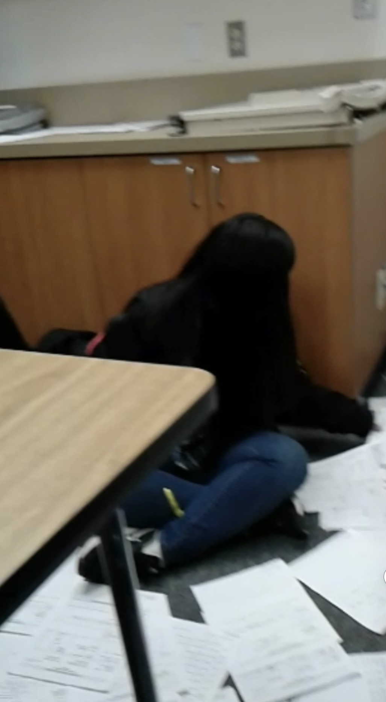
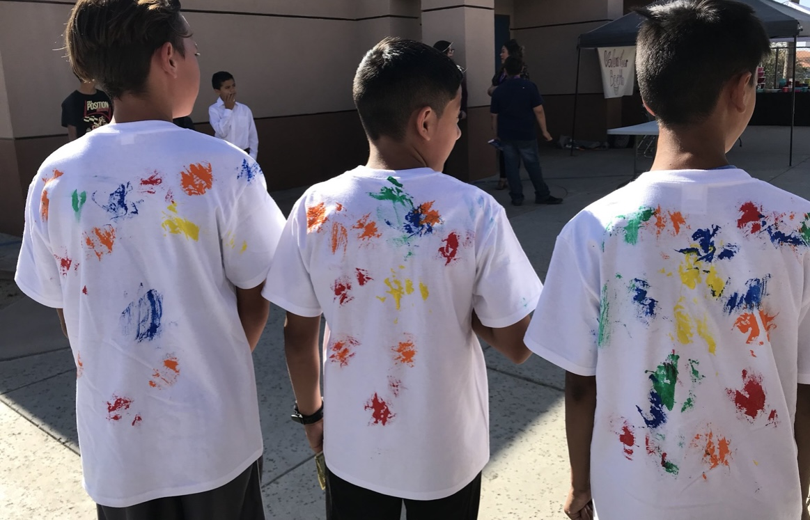

Esmeralda Barboza
My name is Esmeralda Barboza. I am in Business Management. UC Riverside Class 25'.The following is my professional experience which maninly consists of a couple of interships I had the amazing opportunity to be apart of.
My previous professional experience isn't that grand but that I have been a part of a few internships such as the Fieldwork management program. It was a program I was introduced to at my university. This program challenged me in every way. My skill, my knowledge, and my decision making. The program taught me many valuable things and provided me with hands-on experience. It aided me in using the knowledge I had already accumulated through my professors and put it to the test through a real life experience. Which I am very grateful for since there is only so much you can learn from books and lectures. I was able to be in a business setting and work on real- world projects. Which I was personally very excited to put my knowledge and skill set to the test and see if I came out of this stronger and more confident in my skills. Of Course, I also learned many valuable lessons and future references from the people around me, they made sure to offer a helping hand when I needed it during confusing times. This program was a hundred and twenty hours which sounds like a lot but time went by in a flash.
Another program I was very fortunate to be a part of taught me some valuable lessons for the future. I was able to assist to best of my capabilities in a couple of exciting projects. Which were at first very intimidating. They helped me with further learning how to do management tasks and how to be prepared in certain circumstances that require quick thinking. I feel like my critical thinking skills were really put to the test and I was able to come out of this experience with a greater capability. One I can say I am truly confident in. Of Course there's still plenty I have yet to learn and experience but I am open to learning and taking advantage of the opportunity to further learn when it is presented to me. This program, although challenging at first, due to my lack of knowledge and experience has had me come out of this ready to dive in head first to my next challenge. I feel like I have become more prepared for my future role in business management. A couple of skills I have learned from these amazing experiences and programs are the following. I have learned to efficiently oversee operations and further help those around me, my colleagues or future employees to reach their top productivity goals. I am more organized and prepared due to the real world experience.
Experience
Developer
• Assisted in adminstrative tasks
• Assisted with organizational and clerical tasks
• Collaborated with a team of 20 people
Volunteer
• Assisted 2 teachers in administrative tasks to free them up for other planning activities
• Organized and graded papers, assisted with cleanup
Volunteer Community Service
• Assisted library staff in scanning, sorting, and organizing books
• Sanitized, cleaned and prepped student loan computers
• Collaborated with a team of 10 people to clean up campus
Event Volunteer
• Collaborated with a team of 20 people to set up an event for middle school aged students.
• Asssited in the color run, guided students on correct path, provided guidance to parents and students with any question or concern.
• Coordianted with my team to set up and run different booths throughout the day to increase engagement and streamline event processes
Education
UC Riverside
Portfolio




 